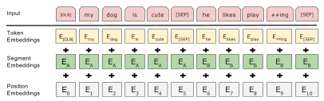
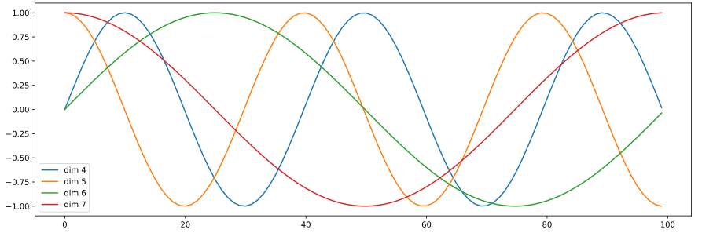
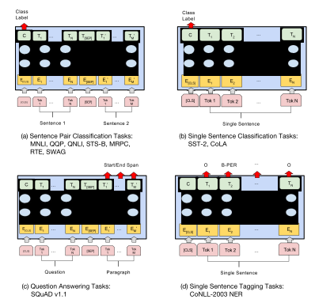
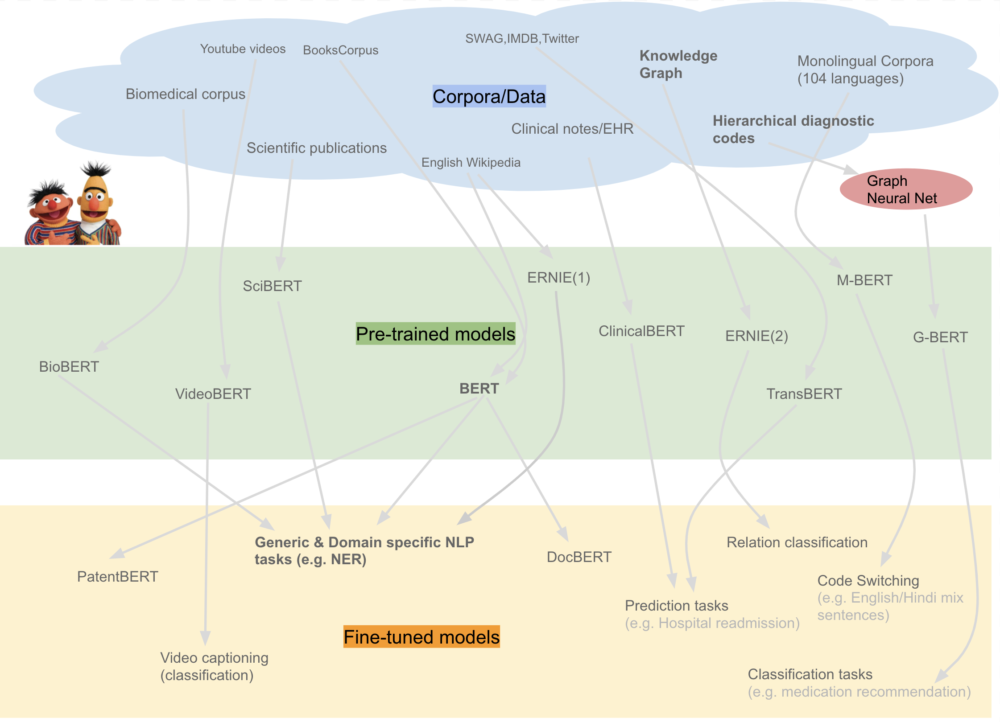

ディープラーニングの心理学的解釈 (心理学特講IIIA)¶
実習¶
雑談，余談¶
鳥の翼や羽の構造と空を飛ぶための仕組みの解明と飛行機との関係について。 鳥類や昆虫の翅と飛行機との対比は，人間の脳に宿る知性と，人工知能，あるいはニューラルネットワークモデルとの対比がなされます。 調べる限り サイエンティフィック・アメリカン に掲載された Ford と Hayes の記事が出典のようです。 この記事によれば，鳥の羽の構造の研究だけからは，飛行機は生まれなかった。飛行機を実用化するために必要な実験は「人工翼」の風洞実験でした。 飛行機の実現がもたらしたものは，空力学の理解，鳥の羽と飛行機と飛行することについての深い理解でした。 鳥の羽の解剖学は，つぎはぎ，付け足しから成る進化の産物である羽は，かえって飛行の本質を捉えにくかったと考えられます。 「鳥の羽」と「人工の翼」との関係を，「人間の脳」あるいは脳に宿る知性と「ニューラルネットワーク」に置き換えて考えれば， 人間の知性を，微に入り際に入り調べること，そこから一旦離れて，別の材料を用いた実験を行うことで， 人間と動物と機械の全てに共通する知性について深い理解が得られるだろう，と前述の Ford と Hayes は書いています。
Ford, K. and Hayes, P. (1998) On Computational Wings: Rethinking the Goals of Artificial Intelligence, Scientific American, 9(4), 79-83.
復習¶
Seq2sep 翻訳モデル¶
中間層の最終時刻の状態に文表現が埋め込まれているとすると，これを応用するば 機械翻訳 や 対話 のモデルになる。 初期の翻訳モデルである "seq2seq" の概念図を示した。 "eos" は文末 end of sentence を表す。 中央の "eos" の前がソース言語であり，中央の "eos" の後はターゲット言語の言語モデルである単純再帰型ニューラルネットワークの中間層への入力として用いられる。
注意すべきは，ソース言語の文終了時の中間層状態のみをターゲット言語の最初の中間層の入力に用いることであり， それ以外の時刻ではソース言語とターゲット言語は関係がない。 逆に言えば最終時刻の中間層状態がソース文の情報全てを含んでいるとみなすことが可能である。 この点を改善することを目指すことが 2014 年以降盛んになった。 顕著な例が後述する 双方向 RNN, LSTM を採用したり，注意 機構を導入することであった。
![From [@2014Sutskever_Sequence_to_Sequence]](../assets/2014Sutskever_S22_Fig1.svg)
From [2014Sutskever_Sequence_to_Sequence]

From [@2014Sutskever_Sequence_to_Sequence] Fig. 2

From [@2014Sutskever_Sequence_to_Sequence] Fig. 2
トランスフォーマー が提唱した 自己注意¶
専門用語としては，多頭=自己注意 Multi-Head Self-Attention (以下 MHSA と表記)と呼びます。 多頭とは何か，なぜ 自己 がつく注意なのかを確認してください。


Left: [@2017Vaswani_transformer], Right: [@2019Ramachandran_attention_vision]
- 上図，クエリ，キー，バリュー に注目してください。
- 英単語の意味どおりに解釈すれば，問い合わせ，キー（鍵），値，となります。
- つまり，ある問い合わせに対して，キーを与えて，その答えとなる値を得ること。
- この操作を入力情報から作り出して答えを出力する仕組みに，ワンホット表現を使うことがポイント
下図左は上図右と同じものです。この下図右を複数個束ねると下図中央になります。
- 下図中央の Scaled Dot-Product Attention と書かれた右脇に小さく h と書かれています。
- この h とは ヘッド の意味です。
- 下図中央を 1 つの単位として，次に来る情報と連結させます。これが下図右です。
- 先週のリカレントニューラルネットワークでは，中間層の状態が次の時刻の処理に継続して用いられていました。
- ところが 多頭=自己注意 MHSA では一つ前の入力情報を，現在の時刻の情報に対するクエリとキーのように扱って情報を処理します。
- 下図右の下から入力される情報は，input と output と書かれています。さらに output の下には (Shifted right) と書かれています。すなわち，時系列情報を一時刻分だけ右にずらし（シフト）させて逐次情報を処理することを意味しています。
- 下図右の下から入力される情報は，embedding つまり埋め込み表現 と 位置符号化 position embedding が足し合わされたものです。埋め込み表現とは先週 word2vec で触れたベクトルで表現された，単語（あるいはそれぞれの項目）の 意味表現 に対応します。


少しだけまとめると:
- 自然言語処理，画像処理，強化学習，メタ学習の 4 分野でほほ同様の 多頭自己注意 MHSA が取り入れられている。
- クエリ，キー，バリュー の重みを学習することが MHSA の学習である。
- 従来手法である 畳み込み や LSTM を MHSA で置き換える動きがある。
BERT の特徴¶
- 上記のトランスフォーマーに基づいて BERT が提案されました。
- BERT は Bidirectional Encoder Representations from Transformers から命名したと原著論文には書いてあります。
- ですが，この原著論文の直前に提案されたモデルに ELMo があったため，こじつけた，ふざけた命名でしょう。
- もちろん ELMo (こちらは Embeddings from Language Models から命名されました)も BERT もセサミストリートに出てくるキャラクタです。
BERT の特徴を 3 つにまとめると以下の通り
- トランスフォーマー Transformer に基づく 多頭自己注意 (MHSA) を使った多層ニューラルネットワークモデル
- 2 つの事前訓練: マスク化言語モデル と 次文予測課題 を用いる
- 事前訓練済のモデルを用いて，解くべき課題のそれぞれについて ファインチューニング Fine tuning を施す
- 個別の課題は下流課題 down stream tasks と呼ばれます。上流 と 下流 との区別は，最初に行う事前訓練のことを時間的に先行するので上流，その後のファインチューニングするそれぞれの課題のことを下流課題と呼んでいます。
- 複数の課題に対して個別にファインチューニングを行うことにより，複数の下流課題で性能向上が認められました。 GLUE スコアボード, SuperGLUE を参照してください。
BERT の入力表現¶
- 上の図にもあったとおり BERT では入力情報が埋め込み表現だけでなく，位置符号化器の情報が加算されます。
- BERT では，埋め込み表現と位置符号化器の情報に加えて，セグメント埋め込み segment embeddings も加えた情報が入力情報となります。下図参照

埋め込みトークンの総和，位置符号器，分離埋め込みの 3 者 From [@2018BERT] Fig. 2
- 上図では，下 3 行が入力情報を構成する 3 つの要素になっています。上（ピンク色）が合算した入力情報になります。
- 3 つの入力情報とはそれぞれ，下から 位置符号化器 （薄灰色），セグメント埋め込み (淡緑)，トークン埋め込み (淡黄) です。
位置符号器 Position encoders¶
- 上述のようにトランスフォーマーの入力には，単語埋め込み表現に加えて，位置符号器の信号も加算されます。
- 位置符号器による位置表現は，i 番目の位置情報をワンホット表現するのではなく，周波数領域に変換することで周期情報を表現する試みと見なすことができます。

位置符号化に用いられる符号化。位置情報を周波数情報へ変換して用いています。
-
位置情報を周波数情報へ変換することが良いことなのか，どうなのか，は議論されている最中です。 一つの研究テーマでもあります。
-
数学的な説明は フーリエ変換 を調べてください。任意の関数 y=f(x) では x は位置情報を表しているとみなすことができます。 従って，位置 x を与えると対応する値 y が得られることを表している式が y=f(x) です。 これに対して，任意の情報は周波数，すなわち，波の重ね合わせとして表現できます。 すべての周波数を重ね合わせると元の関数になります。 反対に，ある周波数の値は，関数 f(x) を周波数へ変換したときの特定の周波数成分として表現できます。
BERT における位置符号化器は位置情報を波の成分として表現したことになります。
このようにしてできた値を入力側と出力側で下図のように連結させたものが以下のトランスフォーマーです。

From [@2017Vaswani_transformer] Fig. 1
これまで見てきたように，トランスフォーマーでは入力信号に基づいて情報の変換が行なわれる。 この意味ではトランスフォーマーにおける 多頭 自己注意 MHSA とはボトムアップ注意の変形であるとみなしうる。 逆言すれば，RNN のように過去の履歴をすべて保持しているわけではないので，系列情報については，position encoders に頼っている側面が指摘できる。
BERT の事前訓練: マスク化言語モデル¶
全入力系列のうち 15% をランダムに [MASK] トークンで置き換える
- 入力はオリジナル系列を [MASK] トークンで置き換えた系列
- ラベル: オリジナル系列の [MASK] 部分にの正しいラベルを予測
- 80%: オリジナル入力系列を [MASK] で置換
- 10%: [MASK] の位置の単語をランダムな無関連語で置き換える
- 10%: オリジナル系列
BERT の事前訓練: 次文予測課題¶
言語モデルの欠点を補完する目的，次の文を予測
[SEP] トークンで区切られた 2 文入力
- 入力: the man went to the store [SEP] he bought a gallon of milk.
- ラベル: IsNext
- 入力: the man went to the store [SEP] penguins are flightless birds.
- ラベル: NotNext
BERT: ファインチューニング¶
(a), (b) は文レベル課題， (c),(d)はトークンレベル課題, E: 入力埋め込み表現, : トークン の文脈表象。

From [@2018BERT] Fig.3
GLUE: General Language Understanding Evaluation¶
- CoLA: 入力文が英語として正しいか否かを判定
- SST-2: スタンフォード大による映画レビューの極性判断
- MRPC: マイクロソフトの言い換えコーパス。2文 が等しいか否かを判定
- STS-B: ニュースの見出し文の類似度を5段階で評定
- QQP: 2 つの質問文の意味が等価かを判定
- MNLI: 2 入力文が意味的に含意，矛盾，中立を判定
- QNLI: 2 入力文が意味的に含意，矛盾，中立を判定
- RTE: MNLI に似た2つの入力文の含意を判定
- WNI: ウィノグラッド会話チャレンジ
その他
- SQuAD: スタンフォード大による Q and A ウィキペディアから抽出した文
- RACE: 中学入試，高校入試に相当するテスト多肢選択回答
BERT モデルの詳細¶
- データ: Wikipedia (2.5B words) + BookCorpus (800M words)
- バッチサイズ: 131,072 words (1024 sequences * 128 length or 256 sequences * 512 length)
- 訓練時間: 1M steps (~40 epochs)
- 最適化アルゴリズム: AdamW, 1e-4 learning rate, linear decay
- BERT-Base: 12 層, 各層 768 ニューロン, 12 多頭注意
- BERT-Large: 24 層, 各層 1024 ニューロン, 16 多頭注意
- 4x4 / 8x8 TPU で 4 日間
CoLA サンプル¶
1 は正しい英文，0 は非文
- 1 They drank the pub dry.
- 0 They drank the pub.
- 1 The professor talked us into a stupor.
- 0 The professor talked us.
- 1 We yelled ourselves hoarse.
- 0 We yelled ourselves.
SST-2 サンプル¶
0 は低評価，1 は高評価
- hide new secretions from the parental units 0
- contains no wit , only labored gags 0
- that loves its characters and communicates something rather beautiful about human nature 1
- remains utterly satisfied to remain the same throughout 0
- on the worst revenge-of-the-nerds clichés the filmmakers could dredge up 0
- that's far too tragic to merit such superficial treatment 0 <!-- - demonstrates that the director of such hollywood blockbusters as patriot games can still turn out a small , pe
- rsonal film with an emotional wallop . 1
- of saucy 1
- a depressed fifteen-year-old 's suicidal poetry 0
- are more deeply thought through than in most ` right-thinking ' films 1
- goes to absurd lengths 0
- for those moviegoers who complain that ` they do n't make movies like they used to anymore 0
- the part where nothing 's happening , 0
- saw how bad this movie was 0
- lend some dignity to a dumb story 0 -->
MRPC サンプル¶
- 1
- 文1: "Please, keep doing your homework," said Bavelier, the mother of three.
- 文2: "Please, keep doing your homework," said Bavelier, the mother of 6-year-old twins and a 2-year old.
- 1
- 文1: While Mr. Qurei is widely respected and has a long history of negotiating with the Israelis, he cannot expect such a warm welcome.
- 文2: While Qureia is respected and has a history of negotiating with the Israelis, a warm welcome is not expected.
- 1
- 文1: "Nobody wants to go to war with anybody about anything ... it 's always very much a last resort thing and one to be avoided," Mr Howard told Sydney radio.
- 文2: "We don't want to go to war with anybody . . . it's always very much a last resort, and one to be avoided.
- 0
- 文1: GMT, Tab shares were up 19 cents, or 4.4% , at A 4.57.
- 文2: Tab shares jumped 20 cents, or 4.6%, to set a record closing high at A $4.57.
- 0
- 文1: Martin, 58, will be freed today after serving two thirds of his five-year sentence for the manslaughter of 16-year-old Fred Barras.
- 文2: Martin served two thirds of a five-year sentence for the manslaughter of Barras and for wounding Fearon.
SST-B サンプル¶
最後の数値が評価値
- A plane is taking off. An air plane is taking off. 5.000
- A man is playing a large flute. A man is playing a flute. 3.800
- A man is spreading shreded cheese on a pizza. A man is spreading shredded cheese on an uncooked pizza. 3.800
- Three men are playing chess. Two men are playing chess. 2.600
- A man is playing the cello. A man seated is playing the cello. 4.250
- Some men are fighting. Two men are fighting. 4.250
- A man is smoking. A man is skating 0.5000
QQP サンプル¶
0 は異なると判断， 1 は同じと判断すべき文
- 0
- How is the life of a math student? Could you describe your own experiences?
- Which level of prepration is enough for the exam jlpt5?
- 1
- How do I control my horny emotions?
- How do you control your horniness?
- 0
- What causes stool color to change to yellow?
- What can cause stool to come out as little balls? 0
- 1
- What can one do after MBBS?
- What do i do after my MBBS?
- 0
- Where can I find a power outlet for my laptop at Melbourne Airport?
- Would a second airport in Sydney, Australia be needed if a high-speed rail link was created between Melbourne and Sydney?
- 0
- How not to feel guilty since I am Muslim and I'm conscious we won't have sex together?
- I don't beleive I am bulimic, but I force throw up at least once a day after I eat something and feel guilty. Should I tell somebody, and if so who?
MNLI サンプル¶
- 矛盾
- Met my first girlfriend that way.
- I didn’t meet my first girlfriend until later.
- 中立
- 8 million in relief in the form of emergency housing.
- The 8 million dollars for emergency housing was still not enough to solve the problem.
- 中立
- Now, as children tend their gardens, they have a new appreciation of their relationship to the land, their cultural heritage, and their community.
- All of the children love working in their gardens.
- 含意
- At 8:34, the Boston Center controller received a third transmission from American 11
- The Boston Center controller got a third transmission from American 11.
- 中立
- I am a lacto-vegetarian.
- I enjoy eating cheese too much to abstain from dairy.
- 矛盾
- someone else noticed it and i said well i guess that’s true and it was somewhat melodious in other words it wasn’t just you know it was really funny
- No one noticed and it wasn’t funny at all.
事前訓練とマルチ課題学習¶

From [@2019Liu_mt-dnn] Fig. 1
多言語対応¶

From [@2019Lample_Cross-lingual] Fig. 1
BERT の発展¶

From https://towardsdatascience.com/a-review-of-bert-based-models-4ffdc0f15d58
BERT: ファインチューニング手続きによる性能比較¶

マスク化言語モデルのマスク化割合の違いによる性能比較
マスク化言語モデルのマスク化割合は マスクトークン:ランダム置換:オリジナル=80:10:10 だけでなく， 他の割合で訓練した場合の 2 種類下流課題， MNLI と NER で変化するかを下図 \ref{fig:2019devlin_mask_method21} に示した。 80:10:10 の性能が最も高いが大きな違いがあるわけではないようである。
BERT: モデルサイズ比較¶

モデルのパラメータ数による性能比較
パラメータ数を増加させて大きなモデルにすれば精度向上が期待できる。 下図では，横軸にパラメータ数で MNLI は青と MRPC は赤 で描かれている。 パラメータ数増加に伴い精度向上が認められる。 図に描かれた範囲では精度が天井に達している訳ではない。パラメータ数が増加すれば精度は向上していると認められる。
BERT: モデル単方向，双方向モデル比較¶

言語モデルの相違による性能比較
言語モデルをマスク化言語モデルか次単語予測の従来型の言語モデルによるかの相違による性能比較を 下図 \ref{fig:2019devlin_directionality19} に示した。 横軸には訓練ステップである。訓練が進むことでマスク化言語モデルとの差は 2 パーセントではあるが認められるようである。
BERT: 事前訓練比較¶

事前訓練の効果比較
図には事前訓練の比較を示しされている。 全ての事前訓練を用いた場合が青，次文訓練を除いた場合が赤，従来型言語モデルで次文予測課題をした場合を黄， 従来型言語モデルで次文予測課題なしを緑で描かれている。4 種類の下流課題は MNLI, QNLI, MRPC, SQuAD である。 下流のファインチューニング課題ごとに精度が分かれるようである。
各モデルの特徴¶
- RoBERTa: BERT の訓練コーパスを巨大 (173GB) にし，ミニバッチサイズを大きした
- XLNet: 順列言語モデル。2 ストリーム注意
- MT-DNN: BERT ベース の転移学習に重きをおいたモデル
- GPT-2: BERT に基づく。人間超えして 2019 年 2 月時点で炎上騒ぎ
- BERT: Transformerに基づく言語モデル。マスク化言語モデル と 次文予測 に基づく 事前訓練，各下流課題をファインチューニング。事前訓練されたモデルは一般公開済。
- DistillBERT: BERT の蒸留版
- ELMo: 双方向 RNN による文埋め込み表現
- Transformer: 自己注意に基づく言語モデル。多頭注意，位置符号器.
BERT: 埋め込みモデルによる構文解析¶
BERT の構文解析能力を下図示した。 各単語の共通空間に射影し， 単語間の距離を計算することにより構文解析木と同等の表現を得ることができることが報告されている[@2019HewittManning_structural]。


BERT による構文解析木を再現する射影空間
- word2vec において単語間の距離は内積で定義されていました。
- このことから，文章を構成する単語で張られる線形内積空間内の距離が構文解析木を与えると見なすことは不自然ではないと予想できます。
- そこで構文解析木を再現するような射影変換を見つけることができれば BERT を用いて構文解析が可能となるでしょう。
- 例えば上図における chef と store と was の距離を解析木を反映するような空間を見つけ出すことに相当します
具体的には，以下のような操作をしています:
- 文章に現れる全トークンを表すベクトルを BERT より求める。
- すなわち BERT 全中間層ユニット活性値から構成される全ての値から構成されるベクトル群
- 2 のベクトルが張る部分空間に全トークンを射影する。
- 3 の部分空間内でトークン間の距離を求める。
- 各トークンを短い順にグラフで結ぶ
BERT 実装¶
- BERT 実装のパラメータを以下に示した。
- 現在配布されている BERT-base あるいは性能が良い BERT-large は各層のニューロン数と全体の層数である。
- ソースコードの配布先は https://github.com/google-research/bert
-
オリジナルの論文は https://arxiv.org/abs/1810.04805
-
データ: Wikipedia (2.5B words) + BookCorpus (800M words)
- バッチサイズ: 131,072 words (1024 sequences 128 length or 256 sequences 512 length)
- 訓練ステップ: 1M steps (40 epochs)
- 最適化アルゴリズム: AdamW, 1e-4 learning rate, linear decay
- BERT-Base: 12 層, 各層 768 ニューロン, 12 多頭注意
- BERT-Large: 24 層, 各層 1024 ニューロン, 16 多頭注意
- 訓練時間: 4x4 / 8x8 の TPU で 4 日間
LSTM との異同¶

左: LSTM (浅川, 2015) より，右: トランスフォーマー[@2017Vaswani_transformer]
入力ゲートと入力 は Q, K と同一視，出力ゲートと V とは同一視可能？
Relationship between self-attention and convolution¶

From [@2020cordonnier_attention_and_convolution]
まとめ¶
- MHSA は 畳み込み と同等の能力がありそうである。
- Reformer に見られるように position encodings を工夫する余地は残されているように思われる。